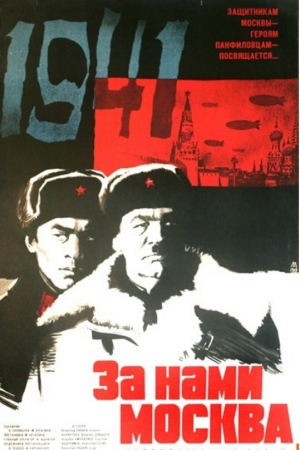

Бауржан Момышулы в кино
Сериал “Волоколамское шоссе”
Альтернативное название: Бауыржан Момышулы
- Год производства: 2013
- Страна: Казахстан
- Жанр:боевик, военный, драма
- Режиссер:Акан Сатаев
- Сценарий:Тимур Жаксылыков, Александр Бек
- Продюсер:Жарасхан Кульпиенов
- Оператор:Искандер Нарымбетов, Хасанбек Кыдыралиев
- Композитор:Ренат Гайсин
- Художник: Назира Байбекова, Асель Шалабаева
- Длительность:50 мин, 4 серии
2

Фильм “За нами Москва”
- Год производства: 1967
- Страна: СССР
- Жанр:боевик, военный, драма
- Режиссер:Мажит Бегалин
- Сценарий: Мажит Бегалин, Василий Соловьев, Александр Бек
- Оператор:Асхат Ашрапов
- Композитор: Эдуард Хагагортян
- Художник: Идрис Карсакбаев
- Длительность:89 мин